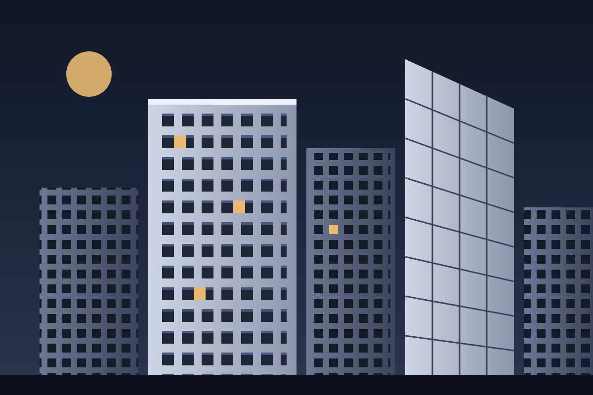
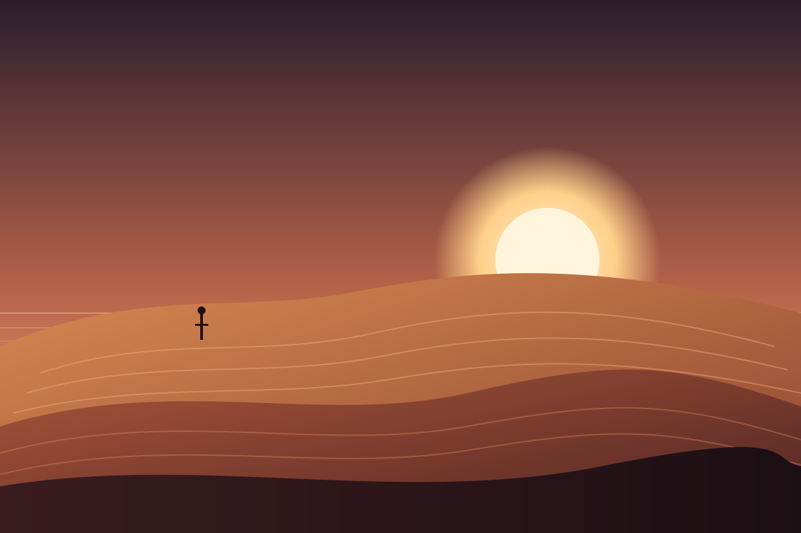
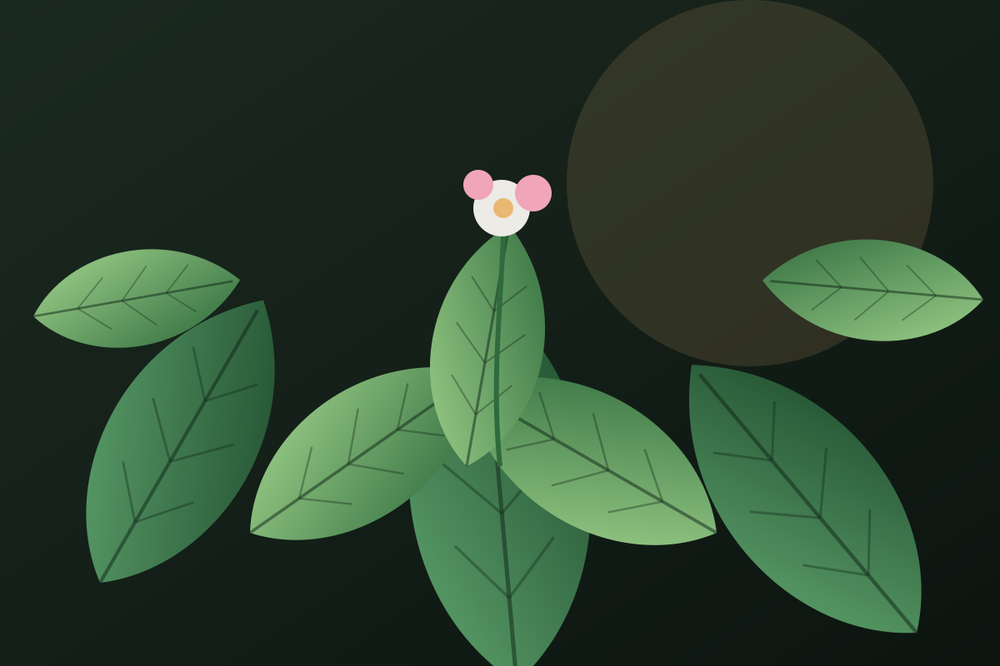

No effects match that search. Try a trigger like “scroll” or a word like “spring”.
Cursor & Pointer
Motion driven by where the pointer is, not only what it touches. Good implementations listen inside a scoped area, smooth the raw coordinates, and never take the real cursor away from the rest of the page.
01 / AnalyticsRealtime
Border light follows the pointer per card.
02 / DeployEdge-ready
The soft glow trails behind the cursor.
03 / SecurityEncrypted
Light, not movement, carries the motion.
Custom cursor only exists inside this frame
depth 0.18
depth 0.38
depth 0.70
depth 1.15 · foreground
MOTION / PASS
Member 0042
perspective: 900px∞
Hover Interactions
State changes when the pointer rests on an element. Hover motion should confirm “this is interactive” in under 300ms. Every hover here also responds to keyboard focus, because hover alone never reaches keyboard or touch users.
Membership
Studio Pro
$24/mo



Explore the collection →
Variant ADraw
Four edges scale in sequence, like a pen tracing the box.
Variant BFlow
A conic-gradient highlight travels around the border.
Scroll Motion
Two families: triggered motion plays once a threshold is crossed, while scrubbed motion is glued to scroll position and reverses when you scroll back. These demos use the real page scroll, so scroll slowly and watch the readouts.
01Threshold
Nothing happens until the item’s top crosses the trigger line.
02One-shot
Then it plays a normal time-based transition.
03Not scrubbed
Scrolling faster doesn’t make it faster.
04Opacity
0 → 1 so the content fades in.
05translateY
40px → 0 so it rises into place.
06Stagger
Items in the same row start 80ms apart.
Depth through speed.
→
- Step 01Capture
The section pins. Scroll now drives the story instead of moving the page.
- Step 02Transform
The product scales and rotates in direct proportion to scroll progress.
- Step 03Release
At 100% the pin releases and normal scrolling continues.
Selected work
01 / 06
Motion ✦ Interaction ✦ Rhythm ✦ Velocity ✦
Scroll down → forward · Scroll up → reverse · Faster → faster ·
Whole page
0%
Same value as the 2px bar fixed to the top of this page.
This section: Scroll Motion
0%
Typography Motion
Text as a moving element. The technique behind most of these is splitting: wrapping characters, words or lines in their own elements so each can be animated with a delay. Always keep one accessible copy of the real text for screen readers.
Motion is a language, not decoration.
Every line rises from behind its own invisible edge.
Design with intent. Animate with purpose. Describe it precisely.
DECRYPTING MOTION SIGNAL
Colour in motion
The gradient moves; the letters stay perfectly still.
MOVE
with rhythm, intent and tension
weight · width · breath
Image & Media
Images rarely move on their own. Motion here comes from framing: zooming within a crop, revealing through a mask, or bringing focus. Keep the frame fixed and move what’s inside it, and the layout never jumps.
filter: blur(18px) → blur(0) · scale 1.12 → 1 · opacity 0.4 → 1
Ambient Motion
Motion that runs on its own, driven by time rather than the user. It should be slow, low-contrast and easy to ignore: atmosphere, not a call to action. Every loop here pauses when off-screen and freezes under reduced motion.
5.2s
6.8s
4.4s
7.6s
5.9s
Different durations + negative delays = never in sync
Ambient background
Calm, slow,
always moving.
Texture
Film grain adds
warmth to flat gradients.
Microinteractions
Small, functional feedback for a single action: a press, a toggle, an expand. Good microinteractions are fast (150–600ms), explain what just changed, and work the same with mouse, touch and keyboard.
menu ↔ close
play ↔ pause
plus ↔ minus
- Notifications
- Autoplay previews
- Without spring (linear, for comparison)
Restraint. Short distances, ease-out curves, consistent timing and very few things moving at once.
You can’t transition to height: auto in most browsers. Animating grid-template-rows from 0fr to 1fr reaches the natural height without measuring anything.
Yes: real buttons, aria-expanded, aria-controls, and collapsed content is hidden from screen readers with visibility, not just squeezed.
3D & Perspective
CSS can place flat elements in 3D space. perspective sets the camera distance, transform-style: preserve-3d lets children keep their depth, and translateZ moves things toward you. No WebGL required.
Dune
Collection
Background · z 0
Content · z 1
Foreground · z 2Buy now
1 / 6
Advanced / Experimental
Effects that draw pixels themselves with Canvas or WebGL, or imitate optical phenomena. They are heavier, so each one starts only when you scroll near it, pauses off-screen, and labels honestly what is real and what is an approximation.
SIGNAL
A · Learn
Motion vocabulary
The words designers and developers use to describe motion. Precise words lead to precise results, from people and from AI tools.
Easing playground
Same distance, same duration, different character. Press play and compare.
Linear
linearEase-in
cubic-bezier(.55,0,1,.45)Ease-out
cubic-bezier(.22,1,.36,1)Ease-in-out
cubic-bezier(.65,0,.35,1)Overshoot
cubic-bezier(.34,1.56,.64,1)Spring
linear(…) sampled springElastic
linear(…) low dampingTrigger concept
The event that starts motion: hover, click, page load, time, pointer movement, or an element reaching a scroll position.
See: Scroll-Triggered Reveal →Scrub scroll
Linking animation progress directly to scroll position. Scroll down and it plays forward, scroll up and it rewinds. There is no duration.
See: Scroll-Scrubbed Animation →Pin scroll
Holding an element in place in the viewport (usually with position: sticky) while the user scrolls through a taller section.
See: Pinned Storytelling →Parallax depth
Layers moving at different speeds in response to scroll or pointer, so the eye reads the difference as depth.
See: Layered Scroll Parallax →Stagger timing
Running the same animation on several elements with a small delay between each, turning one movement into a wave.
See: Split Text →Timeline timing
A sequence of animations placed on one time (or scroll) axis, each with its own start point and duration.
See: Kinetic Typography →Loop timing
An animation that repeats forever, either restarting from the beginning or alternating back and forth.
See: Floating / Bobbing →Marquee pattern
Content moving continuously in one direction, duplicated so it can loop without a visible seam.
See: Scroll-Reactive Marquee →Mask technique
A shape or container that decides which parts of an element are visible. Content can move behind it to appear or disappear.
See: Masked Line Reveal →Clip-path CSS
A CSS property that cuts an element to a shape (circle, inset, polygon). Animating the shape creates reveals without moving content.
See: Mask / Clip-Path Reveal →Morph technique
Smoothly turning one shape into another. Works best when both shapes have the same number of points.
See: Icon Morph →Perspective 3D
The distance of the virtual camera in CSS 3D. Smaller values exaggerate depth; larger values flatten it.
See: Perspective Card →Inertia physics
A sense of mass: the object lags behind its target and catches up smoothly instead of snapping to it.
See: Cursor Follower →Momentum physics
Motion that continues after the input stops and gradually slows, like a flicked list or a fast scroll settling.
See: Scroll Velocity Effect →Spring physics
Motion defined by stiffness and damping instead of duration. It reacts naturally to interruptions and can overshoot slightly.
See: Spring Toggle →Elastic easing
A loosely damped spring that wobbles several times before settling. Playful, and easy to overdo.
See: Easing playground →Overshoot easing
Passing the target value briefly before coming back to rest. A small overshoot makes UI feel alive.
See: Magnetic Button →Ease-in easing
Starts slow and finishes fast, like something accelerating away. Best for elements leaving the screen.
See: Easing playground →Ease-out easing
Starts fast and lands softly. The best default for entrances and responses to user input.
See: Easing playground →Ease-in-out easing
Slow at both ends and fast in the middle. Good for objects travelling from one on-screen position to another.
See: Easing playground →Linear easing
Constant speed. Feels mechanical for UI, but is right for loops, rotation, marquees and anything scrubbed by scroll.
See: Scroll Rotation →Velocity physics
Speed with a direction. Effects can react to how fast you move or scroll, not just where you are.
See: RGB Split →Displacement graphics
Moving each pixel according to the values of a map image, which produces warps, ripples and liquid distortion.
See: Distortion / Displacement →Shader graphics
A small program that runs on the GPU for every vertex or every pixel. That’s how per-pixel effects stay fast.
See: Distortion / Displacement →WebGL graphics
The browser API for GPU-accelerated graphics on a canvas. Libraries like Three.js and OGL are built on top of it.
See: Distortion / Displacement →No terms match.
B · Learn
How to describe motion
A good motion brief answers seven questions. Together they form a sentence that a developer, a designer, or an AI coding tool can build without guessing.
- TargetWhat moves?
- TriggerWhat starts it?
- TransformationWhich property changes?
- RelationshipHow is it tied to input or to other elements?
- Motion CharacterEase, spring, inertia, linear…
- IntensitySubtle, expressive or experimental?
- FallbackTouch and reduced motion?
✕ Bad
Make the hero animation cool.
No target detail, no trigger, no property, no character. Every reader will imagine something different.
✓ Better
Add layered mouse-driven parallax to the hero artwork. Foreground objects should move more strongly than background elements. Use smooth inertia and subtle spring settling, keeping the total movement restrained and premium.
✓ Scroll example
Create a pinned scroll storytelling section. Link the product scale and rotation directly to scroll progress using scrubbed motion, and stagger supporting text as each stage becomes active.
Prompt builder
Pick one answer per question. The sentence updates live.
Generated prompt
C · Learn
Motion intensity
Not every website needs extreme motion. Choose the level that fits the brand and its audience, then stay inside it. The intensity tag on every card above uses these same three levels.
Level 1
Subtle / Premium
Motion confirms and guides. Short distances, ease-out, nothing loops for attention.
Examples
Good for
Corporate · Finance · Banking · Luxury · Professional services
Level 2
Expressive
Motion is part of the storytelling. Scroll drives scenes, type becomes visual, interactions have personality.
Examples
Good for
Agency · Portfolio · Campaign · Lifestyle brand
Level 3
Experimental
Motion is the experience. GPU effects, simulations and unconventional typography, with heavier performance budgets.
Examples
Good for
Creative showcase · Art · Fashion · Experimental campaign
D · Learn
Signature interaction
A great website doesn’t use every effect. It picks one signature motion that people remember, and everything else quietly supports it. That is motion hierarchy.
- HeroStrong scroll-driven product motionSignature · 1 per page
- Supporting objectsSubtle pointer parallaxSupporting
- CTAMagnetic interactionAccent
- CardsSimple hover liftFeedback
- BackgroundSlow ambient movementAtmosphere
Rule of thumb: one signature, two or three supporting behaviours, everything else still. If everything moves, nothing stands out. Hover the list to see each layer in the wireframe; move the pointer over the wireframe to feel how they combine.